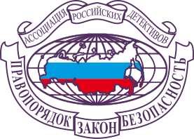

Детективное агентство «Розыск» Улан-Удэ
Имея многолетний опыт работы в сфере детективных услуг, агентство «Розыск» успешно действует в Улан‑Удэ, республике Бурятия и по всей России. Мы берёмся за самые разные задачи — от поиска пропавших лиц и утерянного имущества до проведения корпоративной разведки. Наши специалисты с юридическим образованием и оперативным опытом из органов правопорядка имеют узкую профподготовку и солидный практический стаж. Благодаря обширной информационно ‑ технической базе мы решаем любые задачи строго в рамках закона «О частной детективной и охранной деятельности», гарантируя абсолютную конфиденциальность.
Услуги агентства
Агентство «Розыск» осуществляет профессиональное скрытое наблюдение за людьми — строго в рамках закона и с полным соблюдением конфиденциальности. Мы помогаем установить фактическое поведение человека вне дома или рабочего места. Это может быть наблюдение за ребёнком, если вы беспокоитесь о его окружении или безопасности, за супругом или супругой при подозрениях в неверности, а также за сотрудниками при утечке информации, хищениях или других сомнительных действиях. Наблюдение проводится опытными специалистами с применением технических средств, фото- и видеосъёмкой, с последующим предоставлением подробного отчёта. Мы не просто фиксируем передвижения — мы анализируем поведение, контакты и факты, важные для принятия решений. Услуга доступна в Улан-Удэ, республике Бурятия и других регионах России.
Агентство «Розыск» оказывает широкий спектр информационных услуг для частных и юридических лиц. Мы устанавливаем факты владения недвижимостью и транспортом, определяем расчетные счета организаций и ИП, проверяем сотрудников, доходы, включая зарубежные источники и продажи имущества. Осуществляем поиск людей по Ф.И.О., телефону, адресу, социальным сетям. Проверяем автомобили на угоны, ограничения и владельцев. Предоставляем сведения о судимостях, административных делах, участии в арбитражах, долгах и исполнительных производствах. Устанавливаем дееспособность, собираем полную информацию о недвижимости — включая обременения и историю объектов. Также готовим расширенное досье на человека: от места регистрации и работы до состава семьи, привычек, контактов и кредитных обязательств. Все данные предоставляются на законных основаниях, с максимальной точностью и полной конфиденциальностью.
Чтобы избежать финансовых рисков и неудачных сделок, важно заранее оценить благонадёжность потенциального контрагента. Вам не нужно содержать собственную службу безопасности — эту задачу профессионально решит агентство «Розыск». Мы собираем ключевую информацию для принятия взвешенных решений: проверяем юридический адрес, реквизиты, руководство, учредителей, уставной капитал, наличие филиалов и представительств. Анализируем деловую репутацию и арбитражную историю компании, выявляем долги, участие в судебных разбирательствах и исполнительных производствах, оцениваем финансовую стабильность. Также при необходимости предоставляем обзорную справку на руководителей — с контактами, адресами, сведениями об имуществе и других значимых аспектах. Подход к проверке всегда индивидуален и строится исходя из ваших целей.
Надёжный персонал — залог стабильного бизнеса. Агентство «Розыск» проводит профессиональную кадровую проверку соискателей с согласия кандидатов. Мы выясняем биографические и личностные данные, проверяем наличие судимостей, административных правонарушений, долгов и исполнительных производств, оцениваем связи, образ жизни и репутацию в открытых источниках, включая соцсети и СМИ. Анализируем участие в предпринимательской деятельности, выясняем причины увольнения с прежних мест работы и собираем дополнительную информацию, необходимую для осознанного кадрового решения. Доступны как разовые проверки, так и абонентское сопровождение бизнеса.
Агентство «Розыск» предоставляет информацию, необходимую для защиты ваших интересов в суде. Мы оперативно собираем сведения по гражданским и уголовным делам: участвуют ли физические или юридические лица в судебных спорах, на какой стадии находится дело, кто стороны процесса, какие решения уже приняты. Также выявляем информацию о скрытых конфликтах, инициаторах исков и возможных рисках. Анализируем арбитражную практику компаний и частных лиц, наличие возбужденных уголовных дел, следственные действия и исполнительные производства. Все данные — из официальных источников и с соблюдением законодательства. Мы работаем быстро, конфиденциально и с фокусом на ваш результат.
Агентство «Розыск» профессионально занимается розыском людей — от скрывающихся должников до потерянных родственников. Мы не только поможем установить текущее местонахождение, но и проверим финансовое состояние должника, оценим перспективы возврата средств и предложим грамотную стратегию действий. Также осуществляем поиск людей по всей России и за рубежом — будь то родные, с которыми потеряна связь, бывшие коллеги, друзья, одноклассники или просто знакомые. Работаем с минимальными исходными данными, соблюдая закон и гарантируя конфиденциальность.
Психофизиологическое исследование на полиграфе — надёжный способ установить истину. Агентство «Розыск» проводит проверки по современным методикам МВСИ, МКВ и МВА. Мы помогаем выявлять риски при приёме сотрудников на работу и в ходе внутренних проверок: скрытые зависимости, дисциплинарные нарушения, сокрытие данных, коррупционные схемы, связь с конкурентами и криминальное прошлое. Также проводим тестирование по фактам нанесения ущерба — краж, мошенничества и утечки информации. Для частных клиентов доступны проверки домашнего персонала, выявление зависимостей и даже самопроверка. При заказе от 5 проверок — действует скидка. Все процедуры проводятся профессионально, конфиденциально и по закону.
Партнёрство
Агентство «Розыск» входит в состав Ассоциации охранных организаций Бурятии «Альянс безопасности» — объединения профессионалов в сфере безопасности, обеспечивающего высокие стандарты качества услуг и защиту интересов клиентов на территории региона.

С ноября 2024 года агентство является членом Ассоциации российских детективов (свидетельство № 229) — федерального профессионального сообщества, объединяющего лицензированных частных детективов по всей России и гарантирующего соблюдение этических и правовых норм в сыскной деятельности.